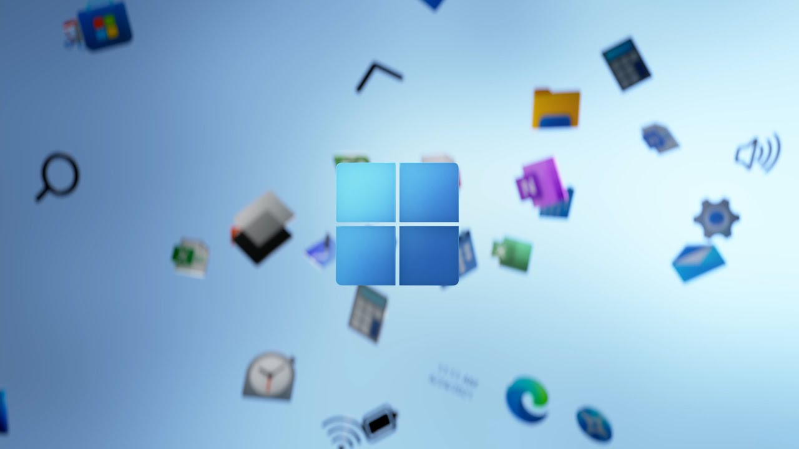

Microsoft Windows was announced by Bill Gates on November 10, 1983.[1] Microsoft introduced Windows as a graphical user interface for MS-DOS, which had been introduced two years earlier.[2] The product line evolved in the 1990s from anoperating environment into a fully complete, modern operating system over two lines of development, each with their own separate codebase.
In 1993, Microsoft released Windows NT 3.1, the first version of the newly developed Windows NT operating system. Unlike the Windows 9x series of operating systems, it is a fully 32-bit operating system. NT 3.1 introduced NTFS, a file system designed to replace the older File Allocation Table (FAT) which was used by DOS and the DOS-based Windows operating systems. In 1996, Windows NT 4.0 was released,which includes a fully 32-bit version of Windows Explorer written specifically for it.
Making the operating system work like Windows 95. Windows NT was originally designed to be used on high-end systems and servers, but with the release of Windows 2000, many consumer-oriented features from Windows 95 and Windows 98 were included, such as the Windows Desktop Update, Internet Explorer 5, USB support and Windows Media Player. These consumer-oriented features were further extended in Windows XP in 2001, which included a new visual style called Luna, a more user-friendly interface, updated versions of Windows Media Player and Internet Explorer 6 by default, and extended features from Windows Me, such as the Help and Support Center and System Restore.
Windows Vista, which was released in 2007, focused on securing the Windows operating system against computer viruses and other malicious software by introducing features such as UserAccount Control.
New features include Windows Aero, updated versions of the standard games (e.g. Solitaire), Windows Movie Maker, and Windows Mail to replace Outlook Express. Despite this, Windows Vista was critically panned for its poor performance on older hardware and its at-the-time high system requirements. Windows 7 followed in 2009 nearly three years after its launch, and despite it technically having higher system requirements,[3][4] reviewers noted that it ran better than Windows Vista.[5] Windows 7 removed many applications, such as Windows Movie Maker, Windows Photo Gallery and WindowsMail, instead requiring users to download separate Windows Live Essentials to gain some of those features and other online services. Windows 8, which was released in 2012, introduced many controversial changes, such as the replacement of the Start menu with the Start Screen, the removal of the Aero interface in favor of a flat, colored interface as well as the introduction of "Metro" apps (later renamed to Universal Windows Platform apps), and the Charms Bar user interface element, all of which received considerable criticism from reviewers.[6][7][8] Windows 8.1, a free upgrade to Windows 8, was released in 2013.[9]